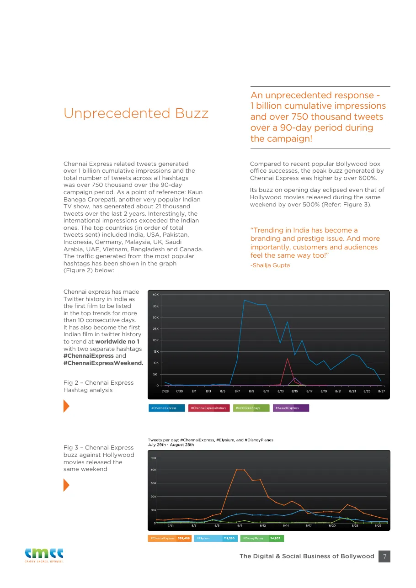
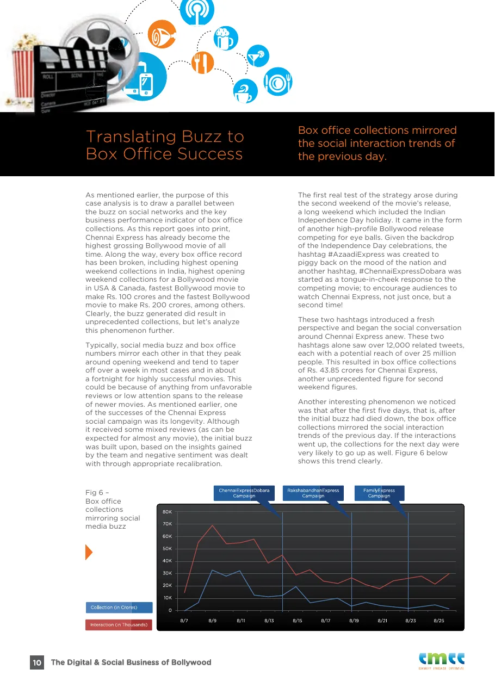

Part II · The First Digital Empire Starts With…, 2000 to 2013 · 14 of 57
Chapter 12 · Chennai Express, 2013: the audience moves the train
Every film campaign asks its audience to watch. Chennai Express asked its audience to drive.

The first look of Chennai Express, 2013. (Image: Final Thesis archive)
The primary record of this chapter is the campaign’s own case study, The Digital & Social Business of Bollywood: The Role of Digital Marketing & Social Media in the Phenomenal Success of Chennai Express, published by Persistent Systems’ social-analytics arm eMee and co-authored by its chief executive, Siddhesh Bhobe, and the film’s Chief Digital Strategist, Shailja Gupta. (Fact. the case study, pp. 1–2) It is the campaign’s own account and its figures are not independently audited. Where it is the only source, it is cited as “Case study” with its page. (Method note)
The brief. The film was Rohit Shetty’s, produced by UTV Motion Pictures and Red Chillies Entertainment, with Deepika Padukone opposite him. Its digital team, the case study says, decided from the start to make social media the centre of the marketing strategy, for three reasons: both stars had loyal followings online; the film’s North-meets-South story invited lively cultural argument; and it would open on Eid-ul-Fitr, when social traffic would be high. The aim was not reach for its own sake but to turn online traffic into people in seats. (Fact. Case study, p. 4) The campaign took the film’s own maxim as its spine, “Don’t underestimate the power of the common man”, in a country that had just watched mass public sentiment rise behind Anna Hazare’s anti-corruption campaign and then on women’s safety. (Fact. Case study, p. 5)
The method. The team recruited eMee to read the audience every day. Its Social Radar collected posts from Twitter, Facebook, YouTube and blogs at fixed intervals, cleaned them, mapped each tweet to the film, ran sentiment and mood analysis on a big-data cluster, and handed the team a report with recommendations at the end of each day. (Fact. Case study, p. 14) The recalibration was real. In the first pre-launch days sentiment from South India was overwhelmingly positive and North India less so, and later campaigns were built on that finding. (Fact. Case study, p. 5) More than 25 fan clubs around the world worked in unison to give out a single message. (Fact. Case study, p. 5) Even the name was a lesson: one handle, ChennaiExp2013, across every network and the website. (Fact. Case study, p. 5)
[image: Chennai Express case study, page 12: the trailer launch train and the browser games]

Case study, p. 12: the website, the browser games and the Twitter train that carried the trailer from Mumbai to Rameshwaram.
The train. For the trailer, fans had to tweet to move a train along a virtual rail line from Mumbai to Rameshwaram. The more they tweeted, the faster it ran, and when it arrived the trailer was released. The case study calls it the first time a film had used Twitter to give users “live redemption”. (Fact. Case study, p. 12) A poster can only be looked at. A train you move together is a story you are part of. (Analysis)
The system around the train
| Piece | What it did | Source |
|---|---|---|
| Website | A standalone home for the film, fully integrated with social networks, kept against advice that social media had made websites redundant | Case study, p. 12 |
| Browser games | Seven or eight games, adapted for mobile and social sites | Case study, p. 12 |
| Rahul meets Meena | A video game built from YouTube clips, deployed on Facebook, taking its input from Twitter: one network sent you to the next | Case study, p. 6 |
| Escape from Rameshwaram | The official endless-runner game, launched on several platforms before release; Meena unlocked at 10,000 coins in one session; still earning paid downloads months later | Case study, pp. 6, 13 |
| Karaoke app | Sing a song from the film, share the score on Facebook, dedicate it to a friend; he met the contest winners | Case study, p. 13 |
| Interactive video | Viewers chose what Rahul did next to woo Meena and changed the ending; first shot as an installation for cinema lobbies and airports | Case study, p. 13 |
| Missed-call line | With ZipDial and Twitter India, a fan base the case study puts at 100 million could get his tweets by SMS after one missed call | Case study, p. 6; Business Standard / IANS, 20 Aug 2013 |
| Hashtags | One hashtag per milestone and holiday: #ChennaiExpressArrives, #CE100crin3Days, #200croreExpress, #AzaadiExpress, #ChennaiExpressDobara, #LungiDance, #SRKTips, #FamilyExpress and more | Case study, pp. 8–9 |
[image: Chennai Express case study, page 7: Unprecedented Buzz]

Case study, p. 7: the hashtag curve (Fig. 2) and the opening weekend against the Hollywood releases (Fig. 3).
What the campaign reported
| Measure | Reported figure | Source |
|---|---|---|
| Campaign period | 90 days | Case study, p. 7 |
| Tweets across all hashtags | over 750,000 | Case study, p. 7 |
| Cumulative impressions of those tweets | over 1 billion; impressions abroad exceeded those in India | Case study, p. 7 |
| For comparison | Kaun Banega Crorepati: about 21,000 tweets over two years | Case study, p. 7 |
| Peak buzz against recent Bollywood hits | more than 600% higher | Case study, p. 7 |
| Opening-weekend buzz against Hollywood’s same-weekend releases | more than 500% higher; #ChennaiExpress 368,406 tweets, #Elysium 119,360, #DisneyPlanes 34,607 (29 July to 28 August) | Case study, p. 7, Fig. 3 |
| Trending | the first film in India’s top trends for more than 10 consecutive days; the first Indian film to trend worldwide at No. 1, with two hashtags | Case study, p. 7 |
| His Twitter following | 3.8 million to 4.9 million, 31 March to 15 September 2013 | Case study, p. 4, Fig. 1 |
| Second weekend | #AzaadiExpress and #ChennaiExpressDobara: over 12,000 tweets, each with a potential reach of over 25 million people; ₹43.85 crore that weekend | Case study, p. 10 |
| Sentiment | 31% positive, 65% neutral, 4% negative | Case study, p. 15, Fig. 9 |
| Brands | 18 direct brand associations; over 30 brands rode the film directly or indirectly | Case study, p. 11 |
| Palam Sarees | over 550,000 Twitter impressions in seven days | Case study, p. 11 |
(Correction note: earlier drafts printed the sentiment as 65% positive and 31% neutral, from a secondary source; the case study’s own chart gives 31% positive and 65% neutral. Earlier drafts also gave the brands as 18, then as 30; the case study gives both, 18 direct and over 30 direct or indirect.)
The buzz and the box office. The case study’s central claim is about money. After the first five days, it says, the box office mirrored the social conversation of the previous day: when interactions rose, the next day’s collections were very likely to rise too. Its Fig. 6 plots the two lines and marks the #ChennaiExpressDobara, #RakshabandhanExpress and #FamilyExpress campaigns on them. (Fact. Case study, p. 10) Typically, it notes, buzz and collections both peak at the opening weekend and fade within a week or two; this campaign’s achievement was longevity. (Fact. Case study, p. 10) This book reports the claim as the campaign made it. A curve that moves with another does not prove that one caused the other. (Analysis)
[image: Chennai Express case study, page 10: box office collections mirroring social media buzz]

Case study, p. 10: “Box office collections mirrored the social interaction trends of the previous day.” (Fig. 6)
The records. As the case study went to print, the film had become the highest-grossing Bollywood film of all time, with the highest opening weekend in India, the highest opening weekend for a Bollywood film in the USA and Canada, and the fastest runs to ₹100 crore and ₹200 crore. (Fact. Case study, p. 10) Trackers today give a worldwide range of ₹396 crore to ₹425 crore and a domestic net of ₹208 crore (Box Office India) to about ₹227 crore. (Fact. Wikipedia: Chennai Express; figures differ by source) It opened on 3,550 screens in India and about 700 abroad, and Zee bought the satellite rights for ₹48 crore plus a share of the box office above ₹130 crore net, a deal the trade called the first of its kind. (Fact. same source) Reviews were mixed. The audience had been given a part before the film opened. (Analysis)
The brands. Over 30 brands rode the film. Palam Sarees, whose sarees Deepika Padukone wore, held a fashion show before release that drew more than half a million impressions in a week. Brands with no tie to the film joined in: an e-commerce site’s #BechDeLungi drew tweets from countries where it did not even trade, and a political hashtag, #FekuExpress, reached over 600,000 people. The case study’s candid finding: most brands ran their campaigns in isolation, and a few even ran opposite campaigns on the same day and split the audience. (Fact. Case study, p. 11)
The recognition. The campaign was a finalist in the Film category of the 6th Shorty Awards. (Fact. Shorty Awards) Persistent Systems won a Computerworld Data+ Editors’ Choice award for it in September 2014, in a release that credits the author as the film’s Creative and Digital Strategist. (Fact. PR Newswire, 18 Sept 2014) The film won Best Marketed Film at the Screen Awards on 14 January 2014. (Fact. Wikipedia) The case study itself, in the author’s account, won the Wharton award she shared with Shah Rukh Khan. (Recollection) [Unverified] the award’s exact name, year and citation, from Wharton’s records.
The case study ends with a line from Malcolm Gladwell’s Outliers: success is not a random act. (Fact. Case study, p. 16) The difference between a social-media campaign and a participatory system is the difference between distributing content and giving people a role. In Chennai Express a fan’s action was not a number on a dashboard. It moved the story everyone could see. (Analysis)
Read the full case study. The Digital & Social Business of Bollywood: The Role of Digital Marketing & Social Media in the Phenomenal Success of Chennai Express (eMee, Persistent Systems, 2013; 16 pages), published as it is, for those who want to read it in full. Open the case study (PDF, 16 pages, 3 MB). Only the phone numbers and email addresses on page 2 are blacked out.
From the Final Thesis
Added from the Final Thesis, word for word. Where a figure here differs from the sourced figure earlier in this chapter, the chapter’s figure stands; see Addendum B.
B. Chennai Express: the fan becomes part of the marketing mechanism
The case study documents an integrated programme, with the following elements:
| Innovation | What was actually built |
|---|---|
| Twitter trailer launch | Fans tweeted to move a virtual train from Mumbai to Rameshwaram; the trailer was released when the train arrived. |
| Official website | A standalone film identity integrated with social networks. |
| Browser games | Seven to eight games adapted for websites, mobile, and social platforms. |
| Mobile gaming | Escape from Rameshwaram, an endless-running game with Rahul and Meena, unlockable characters, obstacles, and upgrades. |
| Interactive video | Users could influence what Rahul did next and change the sequence of a romantic story. |
| Karaoke app | Fans sang film songs, shared scores, and dedicated songs to friends. |
| Permission-based SMS | A missed-call registration concept aimed at extending access to audiences beyond conventional social platforms. |
| Real-time analytics | Social listening, sentiment analysis, audience segmentation, competitor analysis, and daily campaign recalibration. |
The trailer mechanic is the clearest illustration of the difference between publicity and participation. A conventional trailer release asks people to watch. Chennai Express gave them a collective objective and a visible consequence for participating.
The game, karaoke, and interactive video then extended that participation into different forms of entertainment. They were not simply alternate formats for the same poster.
(Final Thesis, section 5)
The performance evidence
The case study reports the following campaign results:
1 billion+
750,000+
Tweets across campaign hashtags, as reported in the case study
25+
18
These are historical figures reported by the campaign’s case study, not independently audited measurements. They demonstrate the scale and mechanics reported by the team, rather than proving that digital marketing alone caused the film’s box-office performance.
The case study also records a direct statement from Khan about the difficulty of adapting a movie to a game format, and his enthusiasm for the running game. It describes his belief in technology as a way of connecting with his audience.
That makes the creative-technology connection more than a theoretical interpretation: it is part of the contemporaneous campaign documentation.
(Final Thesis, section 5)
Chennai Express: When the campaign became measurable
If Ra.One was an experiment in building an entertainment ecosystem, Chennai Express demonstrated the potential of data-driven campaign management.
The film’s digital campaign has been documented in a case study by Persistent Systems and in contemporary industry coverage. The reported campaign ran for approximately 90 days and generated more than one billion cumulative tweet impressions and more than 750,000 tweets across campaign hashtags.
1 billion+
750,000+
90 days
₹424.54 cr
Campaign figures are company-reported, not independently audited unique-person reach. Box-office figure is a trade estimate.
The central development was the application of analytics to the campaign.
Social activity could be measured. Hashtag participation could be tracked. Audience response could inform decisions. The digital campaign was not merely a collection of posts; it was a stream of data that could be observed and acted upon.
That is the bridge between the two early experiments:
- Ra.One explored the extension of a film into characters, games, merchandise and media.
- Chennai Express demonstrated how digital audience activity could be measured and managed at scale.
The distinction is important. One concerned the expansion of the intellectual property. The other concerned the intelligence of the campaign.
Together, they raise a question that is still relevant to the entertainment business:
Why measure a fan’s attention if that relationship disappears when the film leaves theatres?
The opportunity is to build a relationship that continues between releases.
The early campaigns offered evidence of the ambition. They did not, by themselves, establish that a persistent, independently owned fan platform was created.
That distinction will become central to the second half of this study.
(Final Thesis, section 59)
From social media to actionable intelligence
The case study describes the use of analytics and calibrated metrics to understand audience preferences and engagement. It refers to a recommendation system designed to convert social-media data into actionable insights.
This is where the campaign becomes particularly relevant to modern marketing.
The social audience was not treated simply as a crowd to be reached. It was a constantly changing source of feedback.
The underlying cycle was:
Conceptual representation of the campaign’s documented digital and analytics approach, not a reproduction of a proprietary technical architecture.
This is the difference between using social media and designing a social system.
The former distributes a message. The latter can learn from the audience, adapt the message, and invite the audience to help distribute it.
(Final Thesis, section 43)
The fan club as an early creator network
Fan clubs were not a new invention. What changed was their potential role in an integrated digital campaign.
A fan club could become a distribution node. A local community could adapt a campaign idea to its own language and culture. A puzzle or contest could encourage participation. A fan-created response could generate further conversation.
This is the precursor to what is now described as community-led growth, creator marketing, user-generated content, and participatory entertainment.
The key idea is not that every fan should become an advertiser.
It is that the most committed fans already have something traditional advertising cannot manufacture on demand: a personal reason to care.
The marketing challenge is to provide the tools, creative freedom, and recognition that allow that commitment to become participation.
(Final Thesis, section 43)